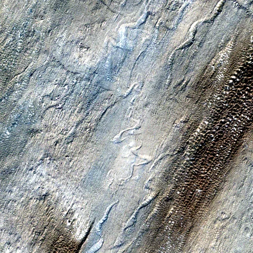

Benchmark / Near-lossless / s2-l1c-10m-4 / s2-l1c-10m-4-37
s2-l1c-10m-4-37
taklamakan · 2023-09-28 · sample details

Metadata
| id | s2-l1c-10m-4-37 |
|---|---|
| source | COPERNICUS/S2 (Sentinel-2 MSI Level-1C) |
| asset | COPERNICUS/S2/20230928T051649_20230928T052430_T44SNJ |
| crs | EPSG:32644 |
| transform | 584200.0 10.0 0.0 4320150.0 0.0 -10.0 |
| datetime_start | 2023-09-28T05:28:02.962Z |
| datetime_end | 2023-09-28T05:28:02.962Z |
| bands | B2|B3|B4|B8 |
| shape | 4x512x512 |
| dtype | uint16 |
| unit | DN |
| scale | 1 |
| offset | 0 |
| nodata | 0 |
| input_sha256 | 5de85c80c91a7ab5ff9e9dcabcf093030fa45a69e70f3811cbe2461d460f0292 |
| site | taklamakan |
| regime | bare |
| lon | 82.002 |
| lat | 39.003 |
| spacecraft | Sentinel-2B |
| mgrs_tile | 44SNJ |
| processing_baseline | 05.09 |
| radio_add_offset | -1000|-1000|-1000|-1000 |